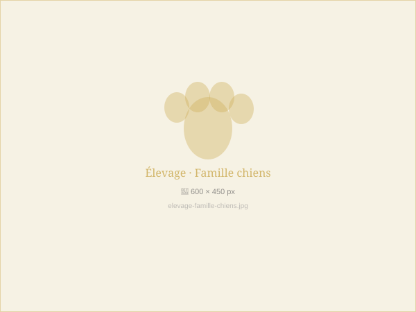

Les débuts
Une passion née
dans la neige
Tout a commencé avec un Husky sibérien — Arctic, notre premier reproducteur — arrivé un matin de janvier 2015 dans notre maison de Sierre. Son regard azur et son énergie indomptable ont tout changé.
Passionnés par ces races nordiques d'une beauté saisissante, nous avons rapidement compris que notre mission serait de transmettre cette magie à d'autres familles, en élevant des chiots sains, équilibrés et aimés dès leur premier souffle.

Notre philosophie
Élevés avec
amour, nés pour la vie
Chez nous, chaque chiot est né dans la maison, pas dans un chenil. Les mamans vivent avec nous, les bébés grandissent au contact de nos bruits quotidiens, de nos voix, de nos enfants.
Nous respectons scrupuleusement les délais de socialisation, les protocoles vétérinaires, et les standards FCI. Chaque départ est un au revoir soigneusement préparé.